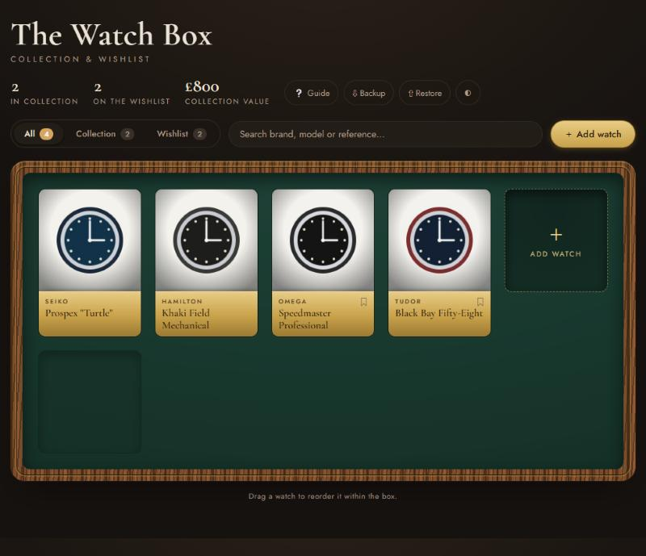
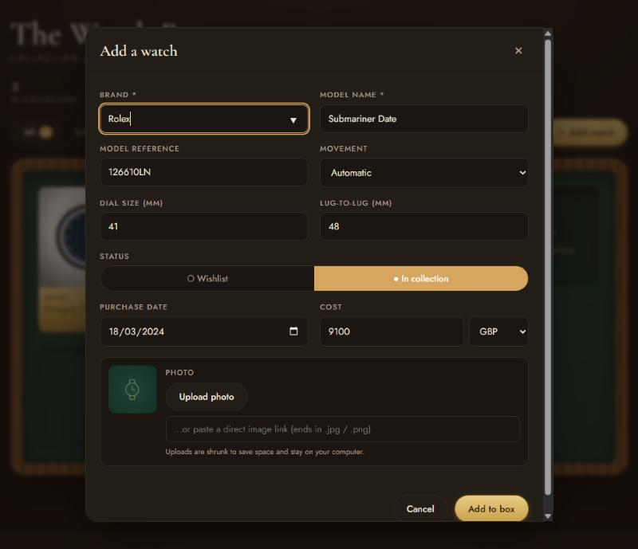
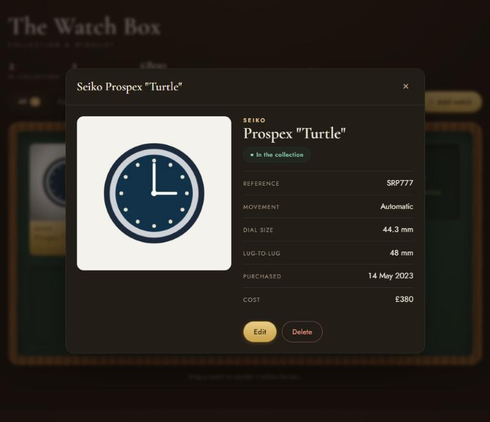

Keep track of the watches you own and the ones you're dreaming of — all in one handsome box. No account, no sign-up, no cost.
Open the Watch Box →Works in any web browser, on computer or phone.
Here's what you're looking at.

Owned or wished-for — both live here.

Everything about a watch, one tap away.

Arrange the box the way you like.
The one habit worth having. Please read this.
No. Just open the link and start adding watches.
No. Each person who opens the app has their own private box on their own device. Sharing the link shares the app, never your collection.
No — it's completely free to use.
Yes, but each device keeps its own separate collection. To copy your watches across, use Backup on one and Restore on the other.
They live in the browser, so clearing its data removes them. This is exactly what Backup protects against: restore your latest backup file and you're back.
No. You can upload a picture from your device, paste a direct image link, or add no photo at all (a watch icon shows instead).